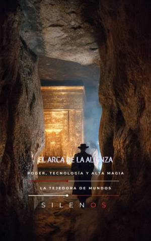

Illuminati
EL ARCA DE LA ALIANZA : Poder, Tecnología y Alta Magia
Sinopsis
¿Fue el Arca de la Alianza simplemente un cofre sagrado o representó una de las piezas de ingeniería ritual más avanzadas de la antigüedad? En esta obra fascinante, se desglosa el misterio del objeto más sagrado de la tradición bíblica desde una perspectiva totalmente innovadora que une la arqueología técnica, la física y la historia política. Un manual de ingeniería del Bronce Tardío Este libro propone una lectura revolucionaria del Éxodo como un auténtico "manual de obra". A través de sus páginas, descubrirás cómo la elección de la madera de acacia y el recubrimiento de oro no fueron solo decisiones estéticas, sino especificaciones técnicas para crear un dispositivo capaz de almacenar y gestionar energía. Lo que encontrarás en este libro: Arqueología Técnica: Un análisis detallado de la conexión entre los talleres de las cortes del Nilo y el diseño del Arca como un "trono móvil" de soberanía. Física de la Presencia: La hipótesis del Arca como condensador eléctrico y el análisis de fenómenos de ionización y carga electro-atmosférica. Protocolos de Seguridad: Un estudio sobre el Tabernáculo como entorno de control técnico y el análisis forense de incidentes históricos de letalidad asociados al objeto. Biotecnología y Sentidos: Desde la química del incienso (Ketoret) y sus efectos neuromoduladores hasta las hipótesis sobre el Maná y estados alterados de conciencia. Geopolítica y Esoterismo: La búsqueda del Arca a través de los siglos, desde las expediciones arqueológicas nazis hasta los programas de inteligencia militar y visión remota (Sun Streak). Del pasado remoto a la actualidad Explora no solo el origen del artefacto en el Levante, sino también su legado en Etiopía, su influencia en las sociedades secretas y su papel crítico en la geopolítica actual de Jerusalén. Es una obra indispensable para quienes buscan entender cómo un símbolo antiguo sigue siendo un motor de poder, política y misticismo en pleno siglo XXI. Atrévete a descubrir el Arca de la Alianza no solo como una reliquia, sino como una tecnología de lo sagrado que desafía nuestra comprensión del pasado.